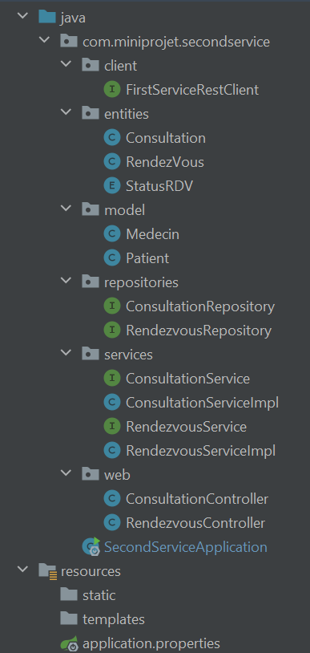

Introduction
Ce rapport présente un mini-projet de gestion des rendez-vous et consultations médicales, développé avec une architecture microservices utilisant Spring Boot. L'objectif est d'optimiser la gestion des rendez-vous médicaux en adoptant une approche modulaire et scalable. Nous explorons le processus de conception, d'implémentation et de déploiement, mettant en avant les avantages de l'architecture microservices dans ce contexte spécifique. Ce rapport offre un aperçu des choix technologiques, des défis rencontrés et des perspectives d'amélioration continue. L'approche choisie vise à moderniser et à rendre plus efficace la gestion des rendez-vous médicaux.
Objectifs
L'objectif principal de ce projet est de concevoir et de mettre en œuvre une application modulaire et évolutive pour la gestion des rendez-vous et consultations médicales.
-
Développer deux services distincts, le premier pour gérer les informations des patients et des médecins, et le deuxième pour gérer les rendez-vous et les consultations.
-
Assurer l'intégration et la communication efficace entre les services à l'aide de l'API Gateway et des clients REST.
-
Utiliser un registre de services pour la découverte et l'enregistrement des services.
-
Mettre en place un serveur de configuration pour la gestion centralisée des configurations de services.
-
Garantir la sécurité, la fiabilité et la disponibilité de l'application.
Table of Content
Conception & Architecture
-
Diagramme de classes :

Le diagramme montre quatre entités principales : Patient, Medecin, RendezVous, et Consultation. Les Patients peuvent avoir plusieurs RendezVous, chaque RendezVous est pour un Patient et un Medecin spécifique, et à chaque RendezVous correspond une Consultation unique.
-
Architecture Microservices :
L'application reçoit des requêtes HTTP d'une partie cliente qui interagit avec le système via une API Gateway. Le système est divisé en deux services principaux : le premier service gère les médecins et les patients, et le deuxième service gère les rendez-vous et les consultations. Chaque service interagit avec sa propre base de données.
Il existe également des composants de support tels que la configuration centralisée (Config Server) et l'enregistrement des services (Service Registry ou Discovery Service). Cela indique une structure conçue pour la résilience, la scalabilité et la gestion efficace des configurations et des services dans un environnement de microservices.


voici les services de projet, sachant que:
first service : Service de Gestion des Patients et Médecins.
second service : Service de Gestion des Rendez-vous et Consultations.
-
Technologies Utilisées :

Contenu application
I.First Service :

-
Entities:

-
Repository:
package com.miniprojet.firstservice.repositories;
@RepositoryRestResource
public interface MedecinRepository extends JpaRepository<Medecin, Long> {
Medecin findByNom(String nom);
}
package com.miniprojet.firstservice.repositories;
@RepositoryRestResource
public interface PatientRepository extends JpaRepository<Patient, Long> {
Patient findByNom(String nom);
}
-
Services:

public interface PatientsService {
Patient savePatient(Patient patient);
public List<Patient> getAllPatients();
public Patient getPatient(Long auteurId);
public void DeletePatient(Long id);
public Patient updatePatient(Patient patient);
}
public interface MedecinService {
Medecin saveMedecin(Medecin medecin);
public List<Medecin> getAllMedecins();
public Medecin getMedecin(Long auteurId);
public void DeleteMedecin(Long id);
public Medecin updateMedecin(Medecin medecin);
}
-
Web:
@RestController
public class MedecinController {
@Autowired
private MedecinService medecinService;
@GetMapping(path = "medecins")
public List<Medecin> getMedecins(){
return medecinService.getAllMedecins();
}
@GetMapping("medecins/{medecinId}")
public Medecin getMedecinById(@PathVariable Long medecinId){
return medecinService.getMedecin(medecinId);
}
@DeleteMapping("medecins/{medecinId}")
public void deleteMedecin(@PathVariable Long medecinId){
medecinService.DeleteMedecin(medecinId);
}
@PostMapping("/medecins")
public Medecin saveMedecin(@RequestBody Medecin medecin){
return medecinService.saveMedecin(medecin);
}
@PutMapping("medecins/{medecinId}")
public Medecin updateMedecin(@RequestBody Medecin medecin) {
return medecinService.updateMedecin(medecin);
}
}
@RestController
public class PatientController {
@Autowired
private PatientsService patientsService;
@GetMapping(path = "patients")
public List<Patient> getPatients(){
return patientsService.getAllPatients();
}
@GetMapping("patients/{patientId}")
public Patient getPatientById(@PathVariable Long patientId){
return patientsService.getPatient(patientId);
}
@DeleteMapping("patients/{patientId}")
public void deletePatient(@PathVariable Long patientId){
patientsService.DeletePatient(patientId);
}
@PostMapping("/patients")
public Patient savePatient(@RequestBody Patient patient){
return patientsService.savePatient(patient);
}
@PutMapping("patients/{patientId}")
public Patient updatePatient( @PathVariable Long patientId, @RequestBody Patient patient) {
return patientsService.updatePatient(patient);
}
}
-
application.properties:
spring.application.name=first-service
server.port=8081
spring.config.import=optional:configserver:http:
Pour importer la configuration à partir du serveur de configuration situé à http://localhost:9999/. Le si le serveur de configuration n'est pas disponible ou ne peut pas être contacté, l'application ne s'arrêtera pas ou ne renverra pas d'erreur.
II.Second Service :

-
Entities:

-
Repository:
@RepositoryRestResource
public interface ConsultationRepository extends JpaRepository<Consultation, Long> {
}
@RepositoryRestResource
public interface RendezvousRepository extends JpaRepository<RendezVous,Long> {
}
-
Model:
le package model contient toutes les classes dont nous aurons besoin dans le 2ème service à partir du 1er service (ce ne sont pas des entités JPA).
-
Client:
@FeignClient(name = "FIRST-SERVICE")
public interface FirstServiceRestClient {
@GetMapping("/patients/{id}")
public Patient getPatientById(@PathVariable Long id);
@GetMapping("/patients")
public List<Patient> getPatients();
@GetMapping("/medecins/{id}")
public Medecin getMedecinById(@PathVariable Long id);
@GetMapping("/medecins")
public List<Medecin> getMedecins();
}
FirstServiceRestClient : est un client Feign utilisé pour interagir avec un service distant. Elle appartient au deuxième service (SECOND-SERVICE) et communique avec le premier service (FIRST-SERVICE). Les méthodes définies dans cette interface correspondent aux points de terminaison du premier service pour récupérer des informations sur les patients et les médecins.
@FeignClient(name = "FIRST-SERVICE") : Spécifie que cette interface est un client Feign pour le service nommé "FIRST-SERVICE".
-
Services:
on retrouve ici toutes les fonctionnalités CRUD pour créer, supprimer mettre à jour et manipuler toutes les entités de notre service.
@Service
public class RendezvousServiceImpl implements RendezvousService{
@Autowired
private RendezvousRepository rendezvousRepository;
@Autowired
private ConsultationRepository consultationRepository;
@Autowired
private FirstServiceRestClient firstServiceRestClient;
@Override
public RendezVous saveRendezVous(RendezVous rendezVous){
Medecin medecin = firstServiceRestClient.getMedecinById(rendezVous.getMedecinId());
Patient patient = firstServiceRestClient.getPatientById(rendezVous.getPatientId());
if(medecin!=null && patient!=null){
rendezVous.setMedecin(medecin);
rendezVous.setPatient(patient);
return rendezvousRepository.save(rendezVous);
}
return null;
}
@Override
public List<RendezVous> getAllRendezVous(){return rendezvousRepository.findAll();}
@Override
public RendezVous getRendezVous(Long rendezvousId) {
RendezVous rendezVous = rendezvousRepository.findById(rendezvousId).orElse(null);
Medecin medecin = firstServiceRestClient.getMedecinById(rendezVous.getMedecinId());
Patient patient = firstServiceRestClient.getPatientById(rendezVous.getPatientId());
rendezVous.setMedecin(medecin);
rendezVous.setPatient(patient);
return rendezVous;
};
@Override
public void deleteRendezVous(Long id){
RendezVous rendezVous = rendezvousRepository.findById(id).orElse(null);
if (rendezVous != null) {
Consultation consultation = rendezVous.getConsultation();
if (consultation != null) {
consultationRepository.deleteById(consultation.getId());
}
rendezvousRepository.deleteById(id);
}
};
@Override
public RendezVous updateRendezVous(RendezVous rendezVous){
RendezVous rv = getRendezVous(rendezVous.getId());
rv.setStatusRDV(rendezVous.getStatusRDV());
rv.setDate(rendezVous.getDate());
rv.setAnnule(rendezVous.isAnnule());
rv.setConsultation(rendezVous.getConsultation());
rv.setPatientId(rendezVous.getPatientId());
rv.setMedecinId(rendezVous.getMedecinId());
Medecin medecin = firstServiceRestClient.getMedecinById(rendezVous.getMedecinId());
Patient patient = firstServiceRestClient.getPatientById(rendezVous.getPatientId());
rv.setMedecin(medecin);
rv.setPatient(patient);
return rendezvousRepository.save(rv);
};
}
pour casser la relation entre FIRST-SERVICE et SECOND-SERVICE (OneToMany), nous obtenons les models dont nous avons besoin en utilisant le firstservicerestclient et les intégrons dans le notre service
@Service
public class ConsultationServiceImpl implements ConsultationService{
@Autowired
private ConsultationRepository consultationRepository;
public Consultation saveConsultation(Consultation consultation){return consultationRepository.save(consultation);};
public List<Consultation> getAllConsultations(){
return consultationRepository.findAll();
};
public Consultation getConsultation(Long consultationId){
return consultationRepository.findById(consultationId).orElse(null);
};
public void DeleteConsultation(Long id){
consultationRepository.deleteById(id);
};
public Consultation updateConsultation(Consultation consultation){
Consultation consultation1 = getConsultation(consultation.getId());
consultation1.setDateConsultation(consultation.getDateConsultation());
consultation1.setRapport(consultation.getRapport());
return consultationRepository.save(consultation1);
};
}
-
Web:
@RestController
public class RendezvousController {
@Autowired
private RendezvousService rendezvousService;
@GetMapping(path = "rendezVous")
public List<RendezVous> getRendezVous(){
return rendezvousService.getAllRendezVous();
}
@GetMapping("rendezVous/{rendezVousId}")
public RendezVous getRendezvousById(@PathVariable Long rendezVousId){return rendezvousService.getRendezVous(rendezVousId);}
@DeleteMapping("rendezVous/{rendezVousId}")
public void deleteRendezVous(@PathVariable Long rendezVousId){rendezvousService.deleteRendezVous(rendezVousId);}
@PostMapping("rendezVous")
public RendezVous saveRendezVous(@RequestBody RendezVous rendezVous){return rendezvousService.saveRendezVous(rendezVous);}
@PutMapping("rendezVous/{rendezVousId}")
public RendezVous updateRendezvous(@RequestBody RendezVous rendezVous) {return rendezvousService.updateRendezVous(rendezVous);}
}
@RestController
public class ConsultationController {
@Autowired
private ConsultationService consultationService;
@GetMapping(path = "consultations")
public List<Consultation> getConsultations(){return consultationService.getAllConsultations();}
@GetMapping("consultations/{consultationId}")
public Consultation getConsultationById(@PathVariable Long consultationId){
return consultationService.getConsultation(consultationId);
}
@DeleteMapping("consultations/{consultationId}")
public void deleteConsultation(@PathVariable Long consultationId){
consultationService.DeleteConsultation(consultationId);
}
@PostMapping("consultations")
public Consultation saveConsultation(@RequestBody Consultation consultation){
return consultationService.saveConsultation(consultation);
}
@PutMapping("consultations/{consultationId}")
public Consultation updateConsultation(@RequestBody Consultation consultation) {
return consultationService.updateConsultation(consultation);
}
}
-
application.properties:
spring.application.name=second-service
server.port=8082
spring.config.import=optional:configserver:http:
feign.client.config.default.loggerLevel=full
Note:
nous devons ajouter ces annotations à la classe SecondServiceApplication: @EnableDiscoveryClient @EnableFeignClients
III.Gateway Service :
Le service Gateway agit comme un intermédiaire qui simplifie la complexité des interactions entre le client et les microservices.
- GatewayServiceApplication:
@SpringBootApplication
public class GatewayServiceApplication {
public static void main(String[] args) {
SpringApplication.run(GatewayServiceApplication.class, args);
}
@Bean
DiscoveryClientRouteDefinitionLocator dynamicRoutes(ReactiveDiscoveryClient rdc,DiscoveryLocatorProperties dlp){
return new DiscoveryClientRouteDefinitionLocator(rdc,dlp);
}
}
- application.properties:
spring.application.name=gateway-service
server.port=8888
spring.config.import=optional:configserver:http:
- application.yml:
spring:
cloud:
gateway:
routes:
- id: r1
uri: http://localhost:8081/
predicates:
- Path=/medecins/**
- id: r2
uri: http://localhost:8082/
predicates:
- Path=/rendezVous/**
application:
name: gateway-service
server:
port: 8888
Ce fichier .yml est une configuration pour le Gateway Service Il définit des règles de routage pour le service passerelle (API Gateway).
IV.Discovery Service :
Les microservices interrogent le Discovery Service pour trouver les instances disponibles d'autres services auxquels ils souhaitent faire appel. Cela facilite la communication dynamique et l'équilibrage de charge entre les services, et pour une meilleure tolérance aux pannes. Les outils populaires pour le service de découverte incluent Eureka de Netflix que nous utilisons dans notre application.
-
DiscoveryServiceApplication:
@SpringBootApplication
@EnableEurekaServer
public class DiscoveryServiceApplication {
public static void main(String[] args) {
SpringApplication.run(DiscoveryServiceApplication.class, args);
}
}
-
application.properties:
spring.application.name=discovery-service
server.port=8761
#dont register server itself as client
eureka.client.fetch-registry=false
# does not register itself in the service registry
eureka.client.register-with-eureka=false
voici le server d'Eureka:
@EnableEurekaServer : pour activer la fonctionnalité du serveur Eureka dans une application Spring Boot. Lorsqu'elle est appliquée à la classe principale d'un projet Spring Boot, elle indique que l'application agira en tant que serveur Eureka.
V.Config Service :
-
ConfigServiceApplication:
@SpringBootApplication
@EnableConfigServer
public class ConfigServiceApplication {
public static void main(String[] args) {
SpringApplication.run(ConfigServiceApplication.class, args);
}
}
-
application.properties:
spring.application.name=config-service
server.port=9999
#spring.cloud.config.server.git.uri=file:
spring.cloud.discovery.enabled=true
#spring.cloud.config.server.git.default-label=master
spring.cloud.config.server.git.uri=file:
-
config(dossier):

pour fournir un support de configuration centralisé et externe aux applications, nous mettons le fichier de configuration de chaque service(configurations de base de données...) dans le répertoire de config.
| service |
properties |
| first-service |
|
| second-service |
 |
| application.properties |
 |
Documentation des Tests avec Swagger UI
avant d'exécuter tous les services pour tester les API et leurs méthodes, nous ajoutons le package d'openAPI au pom.xml du chaque service (first-service & second-service) afin d'obtenir une interface UI:
<dependency>
<groupId>org.springdoc</groupId>
<artifactId>springdoc-openapi-starter-webmvc-ui</artifactId>
<version>2.3.0</version>
</dependency>
<dependency>
<groupId>org.springframework.boot</groupId>
<artifactId>spring-boot-starter-validation</artifactId>
<version>3.2.1</version>
</dependency>
Note:
nous avons ajouté quelques données dans les deux services pour tester et visualiser.
1. Service de Gestion des Patients et Médecins:
Nous pouvons accéder à l'API en utilisant cette URL (depuis le Gateway) : 
2. Service de Gestion des Rendez-vous et Consultations:
Nous pouvons accéder à l'API en utilisant cette URL (depuis le Gateway) : 
Conclusion
L'approche microservices adoptée pour la conception de l'application de gestion des rendez-vous et consultations médicales a démontré une amélioration significative de la modularité et de la scalabilité du système. Grâce à la séparation des préoccupations, chaque service peut être développé, déployé et mis à jour indépendamment, permettant une maintenance et une évolution plus aisées de l'application. L'utilisation d'une API Gateway a simplifié l'interaction entre les clients et les services, tandis que l'intégration du registre de services et du serveur de configuration a renforcé la cohérence et la fiabilité de la configuration.
vous pouvez trouver le code source du projet dans mon github : Microservices-Mini-Projet